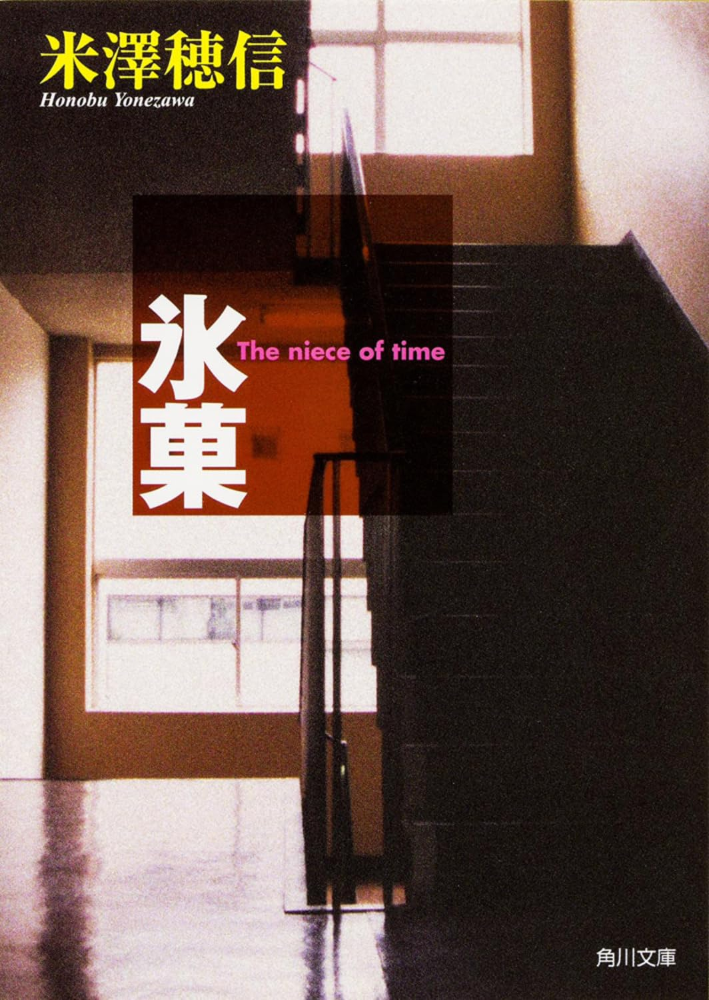

古典部シリーズ
氷菓

あらすじ
できるだけ労力を使わずに過ごしたい高校生の折木奉太郎が、 古典部の仲間と学校生活の中で起きる小さな謎を解いていく作品です。 何気ない会話や記録、行動の食い違いを手がかりにして、 古典部の文集『氷菓』に関わる過去の出来事へたどり着きます。
好きな理由
大きな事件ではなく、 身近な出来事から推理が組み立てられていくところが好きです。 登場人物が知っていることや考えていることの違いによって、 同じ出来事にも別の説明が生まれます。 手がかりを整理しながら、 どの説明が合っているのかを考えていく過程が面白いです。